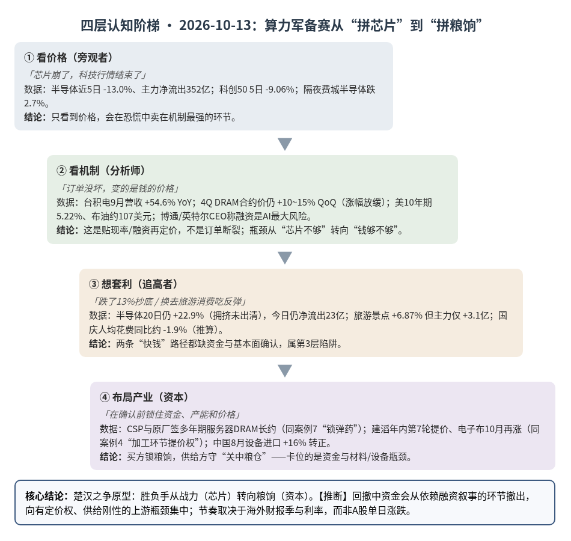
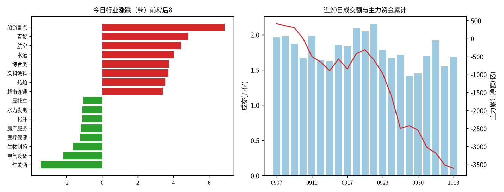
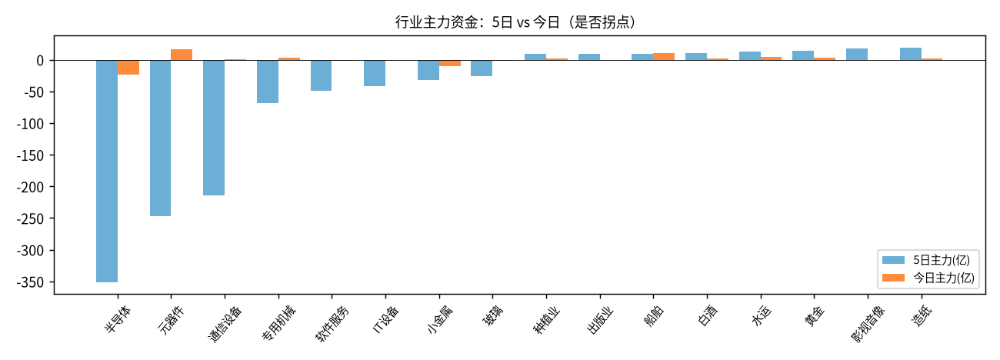

A股投研日报 · 2026-10-13（四层认知版 v4）
算力军备赛从“拼芯片”进入“拼粮饷”——10/13 的 A 股科技去拥挤是资本成本再定价而非需求断裂；能锁住低成本长期资金的买方、以及卡住高端材料瓶颈的供给方是第4层，追旅游消费与左侧抄底半导体都是第3层。
本报告为基于公开数据的研究分析，不构成投资建议。
今日市场概况
数据管道速览（Tushare 收盘数据，规则生成，正文判断见下文）
- 风险偏好偏弱，风格偏大盘/价值防御。 上证指数+0.10%收3,800.86，但盘中最深-1.47%（低点3,741.53），近5日上证50 -0.10%、创业板指 -5.86%、科创50 -9.06%，大小盘/成长价值剪刀差 7.4 个百分点。
- 资金面：全A主力（大单+特大单）今日净额 -98.9 亿，近21个交易日中16天为净流出，当前连续5天流出（今日流出额为近5日最小，抛压边际减弱）；成交 16,889 亿，较上日+8.9%，但低于20日均值 17,909 亿。
- 主线变化：此前领涨的半导体、元器件、通信设备近5日合计主力净流出 -813 亿，是本轮调整的主要卖压来源；今日涨幅居前的旅游景点、百货、航空资金体量有限（合计 +12.5 亿）。【推断】当前更像“高位科技去拥挤 + 低位题材轮动”，而非新一轮趋势行情，反弹的持续性需要成交回到 2.0 万亿以上来确认。
变化点
方法：四层认知阶梯 + 历史周期律（
cognitive-ladder.md/references/cases.md）。市场数据来自 Tushare Pro（见附录）；产业数据附来源链接；推断=本文判断；“一方称”=未经独立核验的单方说法。不构成投资建议。
一、世界观定位（先问三句）
- 属于哪一阶段？三国鼎立→楚汉之争过渡带（与案例库总纲“当前定位”一致）。
- 三国层（科技自给）仍在推进：中国8月半导体设备进口 47.6 亿美元、同比 +16%，结束自2025年11月起的同比下滑（1-8月累计仍 -5%）源。
- 楚汉层（金融/定价权）信号增强：美10年期国债 5.22%（10/8）、博通与英特尔 CEO 称“融资能力”已取代芯片/存储/电力成为 AI 基建最大风险 源；金价触及 4200 美元/盎司 源；布油约 107 美元 源。
- 命中哪个历史原型？——楚汉之争本身：“萧何转漕关中”（替换 v3 的隋大运河）。
- 剥结构：对抗双方战力（芯片性能）差距不再决定胜负，决定胜负的是谁能持续供给粮饷（资本）。
- 找原型：楚汉相争中，项羽战力占优却屡因补给断绝受困，刘邦以萧何坐镇关中持续转运兵员粮饷取胜——对应五阶段中楚汉层“赢家要素=金融与总动员力”。案例库已把案例7（字节296亿美元贷款）与案例4（AI用铜）归入此层，今日变化与之同构。
- 验差异：今日没有“一方崩溃”，而是融资成本整体抬升；需求仍在加速（台积电9月营收 +54.6%）源。→ 只取方向：资本成本是新的分胜负变量，赢家是“关中”——低成本长期资金 + 稳定供给的瓶颈环节推断。
- 为何弃用隋大运河：该原型隐含“工程透支→建设者崩溃”，结构上偏向泡沫破裂叙事，而当前实物数据（营收、合约价、设备进口）并不支持“透支见顶”；且它不在案例库的阶段归类中，难以与既有案例对照。楚汉原型同时解释了“需求强 + 股价跌”与“谁先锁资金谁赢”，与案例7的结论一致。
- 领先指标指向？ 三国→楚汉的切换信号（金融制裁、结算分裂、央行增持黄金）在案例库中为“苗头已现”；今日可见的是利率/油价/金价的同向，央行购金等数据本日未取得（待补充）。
- 纪律：方向≠节奏，这是年度级权重判断；三国层（自主可控）从“成长叙事”转为“底仓”，楚汉层为新增边际权重，不是换仓；若美债收益率与油价同步回落、CSP 上调资本开支并落地，回退本判断。
二、变化一：AI 硬件链去拥挤（主变化）
第1层 · 看价格
- 标志性话语：「芯片崩了，科技行情结束了」「费半大跌，A股跟跌」。
- 数据：半导体（Tushare 行业口径）近5日 -13.0%、主力净流出 352 亿、连续5日流出，今日仍 -23.0 亿；科创50 近5日 -9.06%；创业板指盘中 2860.8 创20日新低；隔夜费城半导体跌 2.7% 源，此前4个交易日累计约 -7% 源。
结论：第1层只看到“崩”，分不清是订单坏了还是钱贵了。
第2层 · 看机制
- 标志性话语：「订单没坏，变的是钱的价格」。
- 四机制：
- ①需求机制（未断）：台积电9月营收 5118.6 亿新台币、同比 +54.6%，1-9月 +41.1% 源；SEMI 预计2026年 WFE 1439 亿美元、+23.1%，上修来自 HBM 与先进逻辑 源。
- ②价格机制（二阶导放缓）：TrendForce 预计4Q26 一般型 DRAM 合约价环比 +10~15%、NAND +15~20%，涨势趋缓，企业级 SSD 是唯一加速品类 源；原厂与 CSP 签多年期服务器 DRAM 长约，以价格区间换能见度 源。
- ③融资机制（新约束）：OpenAI 收入低于此前口径的报道 + 高利率 → 市场质疑下一轮 AI 投资的融资可持续性，估值折价先于任何砍单 源。
- ④传导机制（链内分化）：AI 服务器→高速 PCB→高端 CCL→低介电电子布/HVLP 铜箔/低损耗树脂紧张；建滔积层板年内第7轮调价（FR-4 +10%）、松下最高 +30%、中国巨石9月电子布 +15%/+20% 源，10月电子布再涨且可向 PCB 顺畅传导 源。A股印证：元器件今日 +2.72%、主力 +16.8 亿，为近5日首次转正（此前5日 -247 亿）。
结论：贴现率/融资再定价 + 存储涨价斜率放缓，不是需求断裂；有定价权的瓶颈资金先回流，依赖估值扩张的环节仍在出清。
第3层 · 想套利
- 标志性话语：「跌了13%，抄底」「追 PCB 反弹」。
- 想抄底半导体 → 发现半导体20日仍 +22.9%、今日价跌资金仍流出，拥挤未出清；全A主力近21日16日净流出、成交 1.69 万亿低于20日均 1.79 万亿 → 存量市场里抄底需要别人接盘。
- 想赌存储涨价 → 发现长约价格区间把弹性“焊死”；且涨幅放缓与案例2钾肥的“人为缺口退潮前兆”同型（见下）。
- 想追 PCB → 板厂涨价相对材料存在时滞（一方称，券商观点）源，单日 +16.8 亿流入不构成确认。
- 验证节点在外：10/14 起阿斯麦、海力士、英伟达等陆续发财报 源。
结论：半导体整体左侧抄底 = 第3层；PCB 材料有机制但尚无连续资金确认。
第4层 · 布局产业
- 标志性话语：「在确认前锁住资金、锁住产能、锁住价格」。
- 买方卡位（锁粮饷）：CSP 与存储原厂签多年期长约、HBM 次年多数供给已锁定并调价 源——与案例7“利率窗口仍低时用长期债务锁弹药，融资时机本身就是 alpha”同一逻辑。
- 供给方卡位（关中粮仓）：建滔、松下、中国巨石等握有提价权 源；高端电子布专用织机订单排到2030年、新产线 18-24 个月（一方称）源；景旺电子珠海高阶 HDI 预计10月全线投产、规划年产能 80 万平方米（公司口径）源。
- 国产设备卡位：中国8月光刻设备进口 9.89 亿美元、同比 +32%，UBS 据此上调中国 WFE 至 2026-28年 490/630/700 亿美元（一方称）源——进口仍在增长说明高端未替代，国产处“中端在攻”推断。
结论：资本在锁量、锁价、锁产能；卡位点是低成本长期资金与供给刚性的材料/设备瓶颈，不是叙事环节。
检查清单应用：缺口性质 = 存储为原厂把产能倾斜到 HBM/服务器的人为缺口（可随扩产与长约反转，参照案例2）；高端 PCB 材料为设备交付与认证周期决定的准自然缺口（新产能2027-29年释放，一方称），需右侧确认。替代弹性 = 存储涨价已杀死部分消费端需求：NB/手机出货下修、品牌库存高 源；AI 端暂无替代。领先指标 = CSP 资本开支指引、长约签约、设备进口/订单（领先收入 6-12 个月，同案例3）、美债利率；台积电营收与A股三季报为滞后指标。
与案例库交叉验证
| 案例 | 案例核心论点 | 今日数据 | 判定 |
|---|---|---|---|
| 案例7 字节296亿贷款（楚汉层） | 利率窗口低时锁长期债务=alpha；利率上行则“弹药变负担”、替代弹性改变 | 美10Y 5.22%，CEO 称融资为首要风险；CSP 锁长约 | 强化：已锁资金者占优，后来者融资更贵；同时强化其风险分支（AI 变现不及预期） |
| 案例4 AI用铜 | 机会在高端铜加工而非矿山；AI 服务器高端铜箔 2026 约 2.4 万吨（+260%） | 同一口径数字再被引用 源；HVLP 铜箔紧缺、CCL 第7轮提价 | 强化（加工环节提价权得到新证据）；需求增量数据为同源转引，非新增独立证据 |
| 案例3 装片机/键合机（三国层） | 封装设备增速高于前道；订单≠收入；国产高端≈0 | 中国8月封装设备进口 1.78 亿美元、同比 +34% 源 | 需求端强化；进口高增也说明高端仍靠外资，国产分层判断不变 |
| 案例10 临时键合材料（三国层） | CoWoS/HBM 放量拉动材料，验证→放量需1-2年 | HBM 次年供给多数已锁定 源 | 间接强化需求端；无新的国产验证/放量数据，节奏判断不变 |
| 案例2 钾肥（人为缺口） | 寡头控量的缺口随时可反转，2026年中退潮 | DRAM 4Q 涨幅放缓、长约限缩价格弹性 | 方法论警示：存储同属人为缺口，涨幅放缓是需盯的拐点前兆推断 |
| 案例1 铜 | 矿端自然缺口，TC/RC 为先行指标 | 本日未取得铜价/TC/RC 数据 | 待补充，不作判断 |
三、变化二：旅游/零售/航空领涨
第1层 · 看价格
- 标志性话语：「国庆数据亮眼，消费复苏了」。
- 数据：旅游景点 +6.87%、百货 +4.82%、航空 +4.41%；冰雪经济多股涨停 源。
第2层 · 看机制
- 标志性话语：「人多了，但每人花得更少」。
- ①需求：国庆7天出游 8.26 亿人次、花费 7383.75 亿元，日均可比同比 +6.3%/+4.3% 源 → 人均花费同比约 -1.9%（据两增速推算）；全社会跨区域流动量仅 +0.6%，行业协会称“客流走高、人均消费小幅回落” 源。
- ②供给（局部新增）：入境游客日均同比 +6.5% 源；哈尔滨冰雪大世界扩园至 125 万平方米 源。
结论：量增价减的存量优化，不是消费力的价格拐点。借用案例5的判断方式：假期只是“放大器”，行情持续性取决于能否与自身供需周期共振——目前人均花费下行，共振不成立推断。
第3层 · 想套利
- 想追旅游/航空 → 发现资金均为“首日转正”且仅个位数亿（旅游 +3.1 亿、百货 +2.1 亿、航空 +7.3 亿），与科技链单周数百亿流出不在一个量级；航空20日仍 -2.4%；假期数据已于10/9发布，信息已 price in。
结论：高概率追高接盘（第3层），今日上涨更像避险资金寻找低拥挤板块推断。
第4层 · 布局产业
- 值得卡位的是结构增量而非总量：入境游与冰雪等新供给场景，需季度数据验证；本日未取得相关资本动作的可核验信息（待补充）。
检查清单应用：无供给缺口；替代弹性高（人均花费回落=价格敏感）；假期数据为滞后指标，人均花费、入境游、补贴力度为领先指标。
四、机会表（产业/环节层面，不构成投资建议）
| 机会 | 变化信号 | 认知层级 | 关键风险 |
|---|---|---|---|
| AI PCB 上游高端材料（低介电电子布、HVLP 铜箔、高速 CCL） | 年内多轮提价、10月电子布再涨，成本可传导；元器件资金5日来首次转正 | 第4层（供给卡位）+ 第2层（机制已查证） | 2027年起新产能释放；AI 资本开支融资收缩；材料路线切换 |
| 锁定低成本长期资金的算力买方（案例7逻辑） | 利率高位，长约/长期债务锁量锁价 | 第4层（楚汉层：融资时机即 alpha） | AI 变现不及预期，债务由弹药变负担 |
| 国产半导体前道/封装设备 | 设备进口转正、光刻与封装设备进口高增 | 第4层（三国层底仓） | 出口管制；订单≠收入；板块仍在去拥挤 |
| 服务器存储（企业级 SSD / 服务器 DRAM） | 4Q 合约价仍涨，企业级 SSD 唯一加速 | 第2层（盯二阶导，人为缺口） | 涨幅放缓=拐点前兆（参照案例2）；长约压缩弹性 |
| 半导体整体“跌多了”抄底 | 5日 -13%，20日仍 +22.9%，资金连续5日流出 | 第3层（追高/抄底陷阱） | 海外财报不及预期、利率继续上行 |
| 旅游/零售/航空追涨 | 人次 +6.3%、人均花费约 -1.9% | 第3层（追高陷阱） | 资金一日游、数据已兑现 |
| 入境游、冰雪新供给 | 入境游客日均 +6.5%；冰雪大世界扩园 | 第2层（待验证） | 季节性强、规模小 |
| 黄金等楚汉层配置 | 金价 4200、美债 5.22%、油价高位 | 世界观层（年度边际权重） | 加息兑现压制金价；地缘缓和 |
五、明日/本周验证点（可证伪）
- 去拥挤是否结束：半导体主力资金连续2日转正且创业板指守住 2860.8 → 支持“出清接近尾声”；跌破且继续净流出 → 方向不变、节奏更慢。
- 瓶颈是否被资金确认：元器件次日继续净流入 → 支持“资金向定价权环节集中”；立即转为净流出 → 今日仅超跌反弹，削弱本文判断。
- 消费轮动是否一日游：旅游景点/航空次日资金转负且回吐今日涨幅一半以上 → 确认第3层陷阱。
- 粮饷价格：本周美国通胀数据 源 与 10/14 起海外科技财报 源；CSP 上调资本开支且美债收益率回落 → “资本约束”判断回退。
- 量能：全A成交 < 1.79 万亿维持存量博弈判断；> 2 万亿视为增量入场。

一句话总结：需求在，粮饷贵了——看价格的人在卖芯片、追旅游；看机制的人盯资本成本和涨价二阶导；布局产业的人早已锁住资金、材料和产能。
本报告为基于公开数据的研究分析，不构成任何投资建议。
供应链风险敞口（GB300 Revenue-at-Risk 监测，20261013）
口径：NVL72 当量柜年化系统价值（柜数×单价，一方称），汇率 1 USD=6.7298 CNY（2026-10-13 中间价，新华网）。Δ$ 为事件类型模板（假设）下的断供损失量级，仅用于排序；非预测、不构成投资建议。仪表盘：
/workspace/gb300/risk/gb300_risk_dashboard.html。
基线：年化 EL $12.86B（¥866亿），VaR95 $46.03B（¥3,097亿），CVaR95 $86.84B（¥5,844亿）。EL 前五：Nittobo T-glass（福岛） $4.09B（¥275亿）；中际旭创 光模块 $1.76B（¥118亿）；TSMC CoWoS-L（台湾） $1.38B（¥93亿）；TSMC 晶圆厂（台湾） $1.18B（¥79亿）；Ibiden ABF 载板 $1.14B（¥77亿）
今日新增断供相关事件（3 条，已剔除前一日已出现与无关新闻；采集日志：USGS ok；GDELT 限流；GDELT 0 篇；GDELT 限流；GDELT 0 篇；GDELT 限流；GDELT 0 篇；GDELT 限流；GDELT 0 篇；RSS done；cninfo 失败 HTTPConnectionPool(host='www.cninfo.com.cn', port=80): Max retries exceeded with url: /new/hisAnnouncement/query (Caused by ConnectTimeoutError(<HTTPConnection(host='www.cninfo.com.cn', port=80) at）
| 事件 | 节点 | 类型 | Δ$（假设模板） | 受影响 A 股（方向为推断） |
|---|---|---|---|---|
| 碾压台积电！这家存储大厂靠DRAM涨价赚翻 - 搜狐 | TSMC 晶圆厂（台湾） | shortage | — | — |
| 台积电与GF合作扩产 建立美国本土首座矽中介层产线 - DIGITIMES | TSMC 晶圆厂（台湾） | capacity | — | — |
| [宏和科技高估值偏离基本面80亿扩产面临资金压力 | 市盈率 | 套现 | 股价 | 货币 |
今日事件合计 Δ$：$0.00B（¥0亿）（简单加总，未做瓶颈去重；仅作强度指标）
供第 2 层（看机制）使用的断供窗口提示： - TSMC 晶圆厂（台湾）：份额 0.97（台湾先进制程近乎唯一；Arizona 少量（份额为假设）），部件缓冲约 60 天 vs 恢复期 180 天（假设）→ 全断时断供窗口约 120 天；替代覆盖 0（假设）。 - 宏和/台玻/旭化成 特种布：份额 0.1（余量（推算）），部件缓冲约 60 天 vs 恢复期 180 天（假设）→ 全断时断供窗口约 120 天；替代覆盖 0.05（假设）。
附录：市场数据（证据底稿）


| 收盘 | 今日% | 5日% | 20日% | MA20 | 成交(亿) | |
|---|---|---|---|---|---|---|
| 上证指数 | 3,800.86 | 0.10 | -0.77 | -3.35 | 3,879.51 | 7,793.02 |
| 深证成指 | 12,353.70 | -0.25 | -4.25 | -10.32 | 13,237.50 | 4,370.59 |
| 创业板指 | 2,958.34 | -0.18 | -5.86 | -12.96 | 3,238.95 | 1,769.56 |
| 科创50 | 1,427.18 | 0.03 | -9.06 | -11.66 | 1,563.85 | 769.80 |
| 上证50 | 2,807.42 | -0.43 | -0.10 | -3.58 | 2,853.07 | 1,259.46 |
| 沪深300 | 4,275.68 | -0.29 | -1.60 | -6.54 | 4,442.16 | 4,420.38 |
| 中证500 | 7,085.09 | -0.11 | -4.77 | -8.69 | 7,557.90 | 2,751.36 |
| 中证1000 | 7,023.22 | 0.02 | -4.12 | -8.07 | 7,457.59 | 3,378.28 |
行业资金热力（按5日主力净额排序，前8/后8）
| industry | 今日% | 5日% | 20日% | 今日主力(亿) | 5日主力(亿) | 资金连续天数 |
|---|---|---|---|---|---|---|
| 造纸 | 0.9 | 3.5 | 14.8 | 2.3 | 19.6 | 16.0 |
| 影视音像 | -0.2 | 12.5 | 14.5 | -1.0 | 18.3 | -1.0 |
| 黄金 | 1.6 | 2.7 | -17.8 | 2.8 | 14.4 | 1.0 |
| 水运 | 4.0 | 6.3 | 5.3 | 4.4 | 13.0 | 1.0 |
| 白酒 | 0.1 | 4.0 | -4.3 | 1.7 | 11.0 | 3.0 |
| 船舶 | 3.5 | -1.0 | 5.0 | 10.4 | 9.7 | 1.0 |
| 出版业 | -0.2 | 7.1 | 14.7 | -0.9 | 9.4 | -1.0 |
| 种植业 | 0.9 | 5.5 | -1.9 | 1.6 | 8.8 | 1.0 |
| 半导体 | -0.2 | -13.0 | 22.9 | -23.0 | -351.7 | -5.0 |
| 元器件 | 2.7 | -9.4 | 3.9 | 16.8 | -247.4 | 1.0 |
| 通信设备 | 2.7 | -5.4 | 0.1 | 1.3 | -214.2 | 1.0 |
| 专用机械 | 1.4 | -4.7 | 12.9 | 3.6 | -68.4 | 1.0 |
| 软件服务 | 1.0 | 1.2 | 4.6 | -1.1 | -48.9 | -2.0 |
| IT设备 | 0.3 | -3.6 | -7.0 | -0.9 | -41.5 | -9.0 |
| 小金属 | 0.9 | -3.7 | -7.2 | -9.8 | -31.9 | -2.0 |
| 玻璃 | 0.5 | -8.1 | 2.0 | -2.0 | -26.6 | -10.0 |
市场情绪时间序列（近10日）
| trade_date | 成交(亿) | 上涨占比% | 主力净额(亿) | 个股中位涨跌% |
|---|---|---|---|---|
| 20260922 | 21536.5 | 42.7 | -284.7 | -0.2 |
| 20260923 | 17831.3 | 34.0 | -377.9 | -0.6 |
| 20260924 | 16691.1 | 20.2 | -636.3 | -1.3 |
| 20260928 | 17167.1 | 16.2 | -889.3 | -1.9 |
| 20260929 | 14216.0 | 62.4 | 76.5 | 0.5 |
| 20260930 | 14500.8 | 46.2 | -132.6 | -0.1 |
| 20261008 | 16942.9 | 30.6 | -472.3 | -1.0 |
| 20261009 | 19166.9 | 59.3 | -157.6 | 0.6 |
| 20261012 | 15507.5 | 21.0 | -327.5 | -1.7 |
| 20261013 | 16889.1 | 52.3 | -98.9 | 0.2 |
今日上涨2909家/下跌2486家，涨幅≥9.8% 83家、跌幅≤-9.8% 12家¹。
龙虎榜侧写：机构专用席位合计 -1.48 亿；净买入居前 雪人集团(+0.79亿)、中百集团(+0.69亿)、澳弘电子(+0.67亿)，净卖出居前 电科思仪(-1.60亿)、中京电子(-1.01亿)、托伦斯(-0.82亿)。 沪深股通活跃股：成交前五为中际旭创、宁德时代、新易盛、东山精密、兆易创新，集中在算力硬件与权重股，推断外资交易仍围绕AI链与核心权重展开（成交额≠净买入）。
注：¹涨跌停为按±9.8%阈值近似（limit_list_d无权限）。²行业为Tushare stock_basic分类自行聚合（sw_daily/ths_daily/行业资金流接口无权限），成交加权、剔除N/C新股，成分≥8只。³主力=大单+特大单净额（moneyflow）。⁴2024年8月起北向每日净买入停止披露，moneyflow_hsgt/hsgt_top10数值为成交口径，不可解读为净流入。⁵新闻/公告接口无权限，改用新浪财经7x24公开快讯自动抓取+人工补充。
接口状态：trade_cal:OK；stock_basic:OK；index_daily:OK；moneyflow_hsgt:OK；hsgt_top10:OK；top_list:OK；top_inst:OK；index_dailybasic:OK；新浪7x24(公开):OK 1500条